七海露亞（七海 るちあ（ななみ るちあ），Nanami Ruchia，配音員：日：中田明日見／台：楊凱凱／港：何璐怡）
生日：1989年7月3日／星座：巨蟹座／身高：156cm／血型：O型。
北太平洋的美人魚公主，所屬珍珠為粉紅色。
個性天真爛漫，雖然總是迷糊而常出錯，但在烹飪與手工藝方面十分得心應手。
七年前，曾在一次海難中用自己的真珠救了溺水的海斗。人魚年滿13歲時需舉行成年儀式，但露亞因為真珠不在身邊而無法舉行，在找回真珠後的14歲生日時才正式舉行。
最喜歡的食物是蝦子，不喜歡吃葡萄乾。體育成績優異，最不擅長的科目是數學。
透過美人魚天生的能力，可以和非人類的動物（例如鳥類和海洋生物）以心靈感應交談。另外，故事中有人魚一旦離開真珠就會變成音痴的設定，但在取回真珠後，只要露亞不變回人魚
或變身，就仍然是個音痴。
原作中在與米凱爾戰鬥結束後，由於用自己的吊墜保存著星羅橙色珍珠的負荷，身體迅速衰弱，阿克安·雷芝娜在她瀕臨死亡前救了她，同時也讓她繼承了海之女神的位置。
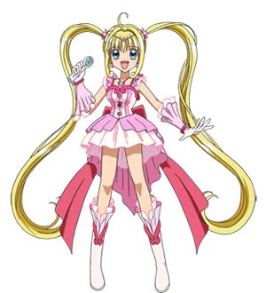
七海妮可（七海 にこら（ななみ にこら），Nanami Nikora，配音員：日：齋藤惠理／台：馬君珮／港：陸惠玲→程文意）
在人類世界管理澡堂「真珠湯」(動畫為旅館「真珠皮亞利」)及充當露亞的姐姐。因擔心露亞背負過重的責任，而對她隱瞞公主的身份。
動畫41集中被海邊之家的真木先生求婚，但因考慮到自己是美人魚而拒絕，但答應他等大海和平後會和他結婚。
人魚型態時有著亮紫色的頭髮和眼瞳，兩側鬢髮留長，有著粉紫色的魚尾；在人類型態時頭髮為紫色，鬢髮縮短，而眼睛為棕色。
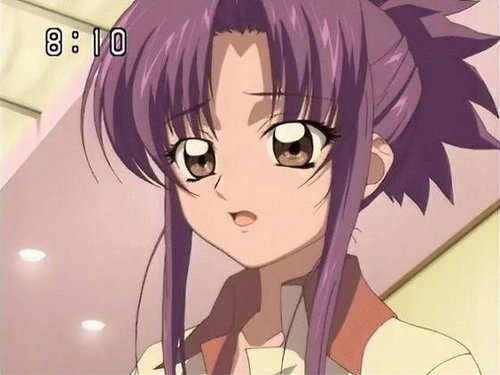
小波（ヒッポ，Hippo，配音員：日：伊東美彌子／台：李明幸／港：黎桂芳、招世亮（龍馬狀態））
原本是一匹守護封印鎖匙的龍馬（海之神獸——席伯卡帕斯，Hippocampus為拉丁語「海馬」之意），但因為偷懶讓沙羅偷走封印鎖匙而受到懲罰，變為一隻企鵝(雖是企鵝卻很怕冷)。
由於他留在人間的時間長，所以他的魔法有時亦會出現失效情況，化身為一個美少年。
與水妖悠莉彼此相愛，在動畫42集中被大家發現，在露亞的鼓勵下，想與悠莉私奔，但在最後想起了自己的責任，與悠莉分手。
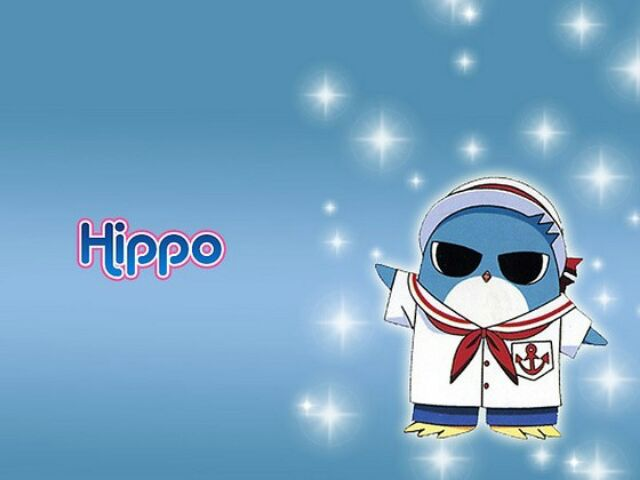
瀧夫人（タキ，Taki，配音員：日：山門久美／台：李明幸／港：謝潔貞）
占卜師，珍珠貝化成的精靈(原作中無此描寫)，在動畫中擔任真珠皮亞利的所有人兼專屬占卜師，能透過水晶球占卜，但結果不太準。
和烏賊大王——染五郎醫生是戀人，兩人約定在世界和平之後結婚，一起生活。
奧莉瑪利斯（アウリ，Auri，配音員：日：神戶みゆき）
瀧夫人的表親，鮑魚的妖精
動畫第34集出現，為了成為占卜師而其來尋找瀧夫人（但動機是為了受男生歡迎）
占卜能力很差，而且賣出去的產品誇大不實
擅長與人交際與愛莉爾、悠莉有一面之緣
珊瑚精
珊瑚的妖精，動畫第36集出現人類的樣子是小寶寶，但他其實是北太平洋宮殿的守衛
來到陸地上的原因是為了看看露亞在陸地上的生活
一開始很討厭海斗，但在被海斗救了一命後認同了海斗
目錄寶生波音（宝生 波音（ほうしょう はのん），Hōshō Hanon，配音員：日：寺門仁美／台：錢欣郁／港：梁少霞、林元春（代配））
生日：1989年5月24日／星座：雙子座／身高：152cm／血型：B型。
南大西洋的美人魚公主，所屬珍珠為水藍色。原王國遭滅後流亡至陸地，是本作第二位登場的美人魚公主。
一看見露亞的項鍊便察覺出露亞的人魚公主身分，便跟著露亞。和露亞同班，後來也搬去和露亞一起住。
當初本來不贊成人魚和人類談戀愛，但後來對海月太郎一見鍾情。
曾被海月誤以為是沙羅。失戀後被白井渚告白，起初對白井渚沒有感覺，認為他像一個未成熟的小弟弟，但最後被小渚的誠心打動而喜歡上他。
個性有活力而不失溫柔，常常和露亞起鬨。自稱「愛情失控列車」。
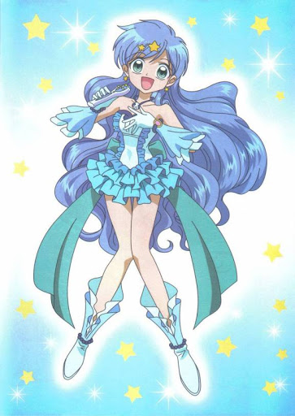
芽流（芽流（メル），Meru，配音員：日：小暮英麻／台：馬君珮／港：陸惠玲）
為了尋找失散的南大西洋國同伴和媽媽來到陸地，並將媽媽託付給她的有明之月音樂盒交給波音。
被悠莉誘騙而背叛了波音，並相信悠莉會幫助她。在悠莉的謊言揭穿後被公主們的歌聲所感動，最後回到了大海。
動畫第一季第24集，為了和海斗一起去參加結婚體驗的活動又來到了陸地,最後查覺到了海斗對露亞心意後放棄與露亞爭奪海斗。
目錄洞院莉娜（洞院 リナ（とういん りな），Toin Rina，配音員：日：淺野麻由美／台：馬君珮／港：曾佩儀）
生日：1989年9月2日／星座：處女座／身高：163cm／血型：AB型。
北大西洋的公主，所屬珍珠為碧色。原王國遭滅後流亡至陸地，是本作第三位登場的美人魚公主。
喜歡看電視,為了電漿電視能付出一切。
個性酷又冷淡，同時也是美人魚中最聰明的，所以受班上許多人仰慕，是位個性堅強，成熟又漂亮的女生。上學時穿著男生制服。
起初因海斗的長相誤認他為凱特，對他含有很深的敵意，後來海斗在一次水妖悠莉的襲擊中救了她們，於是她意識到海斗並不是凱特，並向他道歉。
在諾葳爾被悠莉捉去時曾嘗試救她，但諾葳爾堅持要她逃跑，莉娜一想起這件事就極度自責，也因此令香蓮誤會她更深，後來在動畫28集為了就被抓走的香蓮與夥伴們一起到凱特的宮殿
在要被凱特催眠的時候聽到了阿克安‧雷芝娜女神的呼喊才清醒過來，之後對露亞、波音坦白自己內心的感受，最後阿克安．雷芝娜女神給予三人能對抗黑美人姊妹花的二段變身和新歌。
曾發現自己喜歡上海斗，但後來為了露亞而放下這段感情(動畫原創劇情)。在第二季時與濱崎雅宏成為戀人。
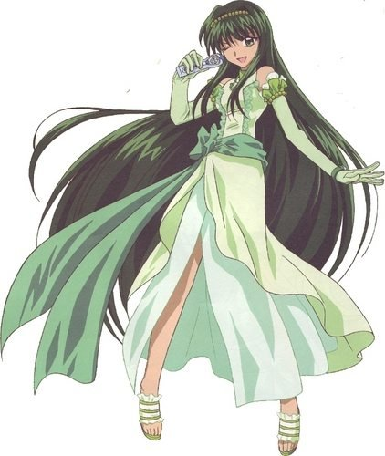
目錄香蓮（かれん，Caren，配音員：日：小暮英麻／台：李明幸／港：林元春）
生日：1986年2月14日／星座：水瓶座／血型：O型。
南極海的美人魚公主，所屬珍珠為紫色。是諾葳爾的雙胞胎妹妹。生日日期不同是由於兩人剛好在跨越13日與14日的午夜先後誕生在北極海和南極海。
之前從未見過面，彼此都很清楚在地球的另一端有著自己的姊妹。其國家未被凱特侵略和破壞。
一開始誤會是莉娜丟下諾葳爾逃跑才導致諾葳爾被悠莉所捉，不喜歡露亞她們，但又經常出手相助。
後來得知自己誤會了莉娜，並成爲她們的同伴。動畫第二季中回復了以往活潑的個性。
在英國調查團前來南極時，喜歡上了其中的成員——司柏魯，但因自己是美人魚公主而放棄了這段感情。
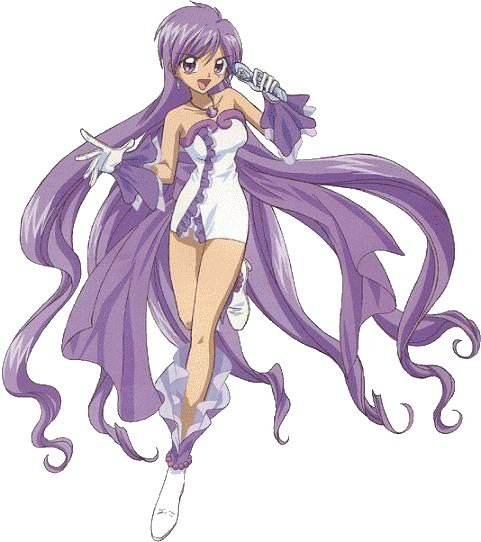
目錄諾葳爾（ノエル，Noel，配音員：日：永田亮子／台：李明幸／港：謝潔貞）
生日：1986年2月13日／星座：水瓶座／血型：A型。
北極海的美人魚公主，所屬珍珠為深藍色。香蓮的雙胞胎姐姐。
個性不同於香蓮，是溫和冷靜的，但平時也有些天然呆。
和莉娜是好朋友，能夠了解莉娜的想法，曾被悠莉所擄，被捉走時要求莉娜丟下她先逃跑，最終被露亞一行人救出。
在動畫第二季中，有時會戴上眼鏡。喜歡閱讀。
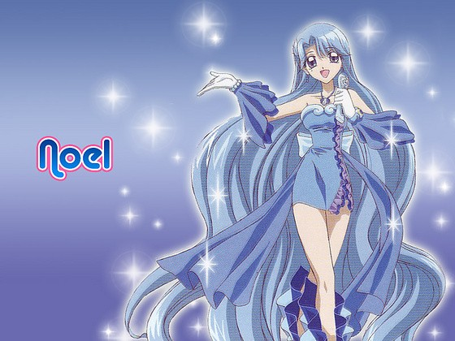
目錄可可（ココ，Coco，配音員：日：新井里美／台：錢欣郁／港：林雅婷）
生日：1984年8月7日／星座：獅子座／血型：B型。
南太平洋的美人魚公主。所屬珍珠為黃色。是沙羅最要好的朋友，一心一意的想拯救沙羅絕望的心，但不僅讓自己的王國受連累而滅亡，甚至自己也被凱特所擄，最終和諾葳爾同時被露
亞一行人救出。
在動畫第二季個性變得活潑開朗，而且對長相帥氣的男生非常感興趣，而因為這點跟波音很合得來。
與香蓮和諾威爾形成一個三人的組合，常一起替波音及莉娜的感情出主意。
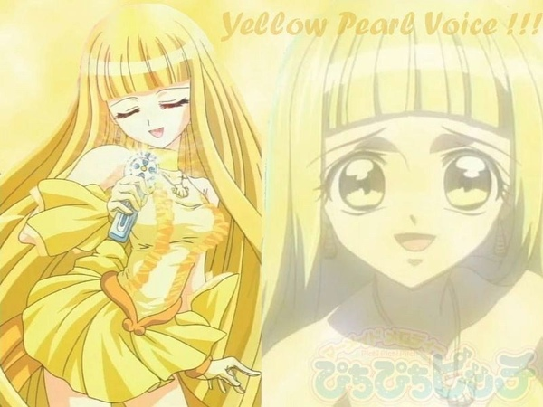
目錄沙羅（沙羅（さら），Sara，配音員：日：植田佳奈／台：汪世瑋／港：朱妙蘭→黃玉娟）
生日：1981年11月22日/星座：天蠍座／血型：O型。
印度洋前任美人魚公主，起初為反派人物登場。所屬珍珠為橙色。是美人魚公主中最年長的，擁有其中特別強大的力量。
過去在與海月太郎相戀時，因海月太郎未履行承諾來到她身邊，於是誤會海月拋棄了她，內心產生的巨大悲傷引起了狂風暴雨並毀滅了印度洋王國，同時這也是造成海斗和露亞初遇時那
場海難的原因。自暴自棄的她趁著守護獸席伯卡帕斯偷懶時，擅用鑰匙解開在凱特城的封印，自此陪伴著凱特，並利用他向人類報復。在漫畫中，也有部分族人跟隨沙羅在凱特城中居
住。
由於放棄了美人魚公主的身份，怨恨的力量將她橙色的頭髮染成了黑色，同時身上其他部分變為灰色，只有眼睛和珍珠仍留有橙色。在未變身的情況下，其歌曲仍擁有超越其他美人魚公
主和反派的實力，在動畫35集中在沒變身的情況下擊退了黑美人姐妹花製造出來的海嘯。
後來因為看到波音對海月太郎的感情，讓她彷彿看見了過去的自己，同時也融化了她冰冷的心，在唱出封印在內心深處的歌曲(副歌部分)後解開與海月太郎的誤會，變回了橙色人魚公主
的原貌。
最後在與其他人逃離凱特城後，她將橙色珍珠交給露亞保管，並回頭去陪著凱特沉入海底。在漫畫中，承認自己對凱特的感情。
在第二季中以靈體的方式存在，並多次引導著露亞，也是她在星羅被米凱爾吸收後，把珍珠盒交託給露亞。
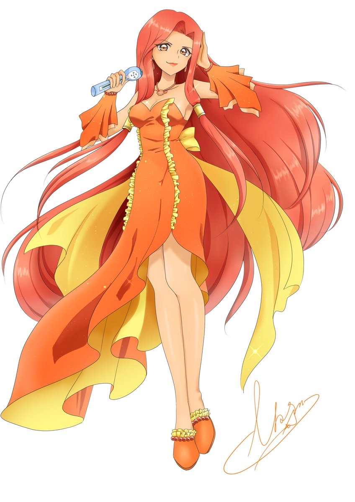
星羅（星羅（せいら），Seira，配音員：日：喜多村英梨／台：錢欣郁／港：鄭麗麗）
生日：2004年12月19日/星座：射手座。
第二季中登場。在沙羅和凱特一同沉入海底之後，印度洋新誕生的美人魚公主，是沙羅的繼承者。
誕生後隨即遭到米凱爾吸收，她的心分布在米凱爾的羽毛上，稱為心之碎片。露亞需要用珍珠盒收集在米凱爾消失時掉下來帶有的心之碎片的羽毛，集齊之後星羅才能回復實體存在。
因心被奪走而無法理解愛人的心情，於是透過露亞學習這份感情。歌曲的力量會隨著心靈一起成長。
曾一度在奇蹟之海灣許願而得以與露亞等人上學和遊玩一天。
被吸收後，因為經常觸碰到米凱爾的內心世界，非常瞭解米凱爾的想法，告訴露亞也要拯救米凱爾的心。
最後米凱爾掉下了所有帶有心之碎片的羽毛，星羅才得以真正的誕生。
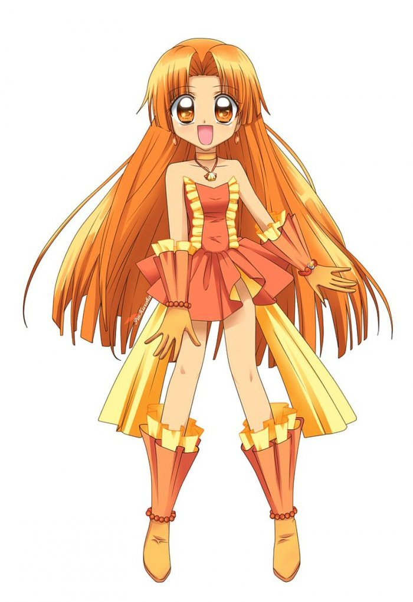
目錄堂本海斗（堂本 海斗（どうもと かいと），Dōmoto Kaito） 配音員：日：岸尾大輔、石塚沙賴(幼年)／台：汪世瑋／港：梁偉德
生於1989年11月21日，星座：天蠍座／血型：B型。
擅長衝浪，而且技術在日本是最高水平的(東日本冠軍）。
七歲搭乘遊輪時遇上暴風雨，翻船後落水的海斗被人魚的露亞所救。
他把露亞當時留下的真珠存放在刻有帕噠拉薩族標誌的墜飾中，並時時刻刻帶在身邊。重逢後即歸還了真珠。
第一眼看見人類型態的露亞，腦海便浮現了當年救他的那隻人魚的身影。
平時表現得調皮且輕浮，但對於自己的家世會露出敏感而纖細的一面(在動畫38集對露亞因為一些小事就要打探他的生事而生氣）。
真實身份是帕噠拉薩族的王子，帕噠拉薩之王凱特的弟弟。阿克安·雷芝娜女神封印帕噠拉薩族之後，因擔心黑暗力量再次復甦，於是將帕噠拉薩族寄託於凱特（支配海洋之力）與海斗
（支配陸地之力）身上的兩個力量分散，並將凱特封印在深海，而海斗則是在沙灘上被堂本夫妻撿到收養。
一旦心中產生「守護」的意念，額頭便會浮現帕噠拉薩族的標誌，並發出強烈的光芒保護美人魚公主們，在此之後通常會昏厥過去。
第一季46集前往夏威夷前正式與露亞在一起，最終得知了大家的真實身分，第二季遭到米凱爾的攻擊，力量被其奪走，為了不讓關於美人魚公主們的記憶被讀取，自行封印了這些記憶。
後來為了救露亞她們，帕噠拉薩族的力量覺醒，也解封了所有記憶。
漫畫中將米兒認作七歲時海難事故的救命恩人，後來因露亞的一吻恢復了記憶。
在第二季深受米兒依賴與喜愛，顧慮到與米凱爾共存的米兒而無法跟米凱爾作戰，因此與露亞產生分歧，但最後依然出現保護著露亞。
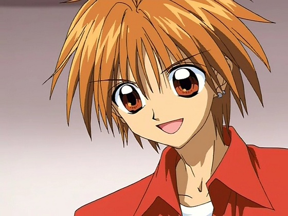
海月太郎（海月 太郎（みつき たろう），Mitsuki Tarō） 配音員：日：桐井大介／台：賀宇傑／港：黃啟昌
露亞她們中學的音樂老師，動畫中在後來擔任她們的班級導師。擅長彈鋼琴，二度舉辦個人演奏會(演奏會上發表的鋼琴曲是為了沙羅作的）。
就讀音樂系時，聽到海斗養父的鋼琴曲後失去自信，而後前往印度旅行，在那裡遇見了沙羅並雙雙墜入愛河，但顧慮到沙羅作為人魚公主的身分，主動退出了這段感情。
但是心中忘不了沙羅一直在尋找她的身影。
看過波音、香蓮的美人魚型態，在動畫43集還見到了黑化的沙羅。
在漫畫中原與沙羅約定好要一起離開，但被沙羅的侍從說服，最終未去迎接她。
去德國留學前，親手作了一首樂曲〈水色的旋律〉送給波音，成了波音在第二季之後的個人曲。
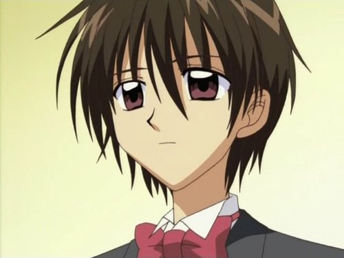
濱崎雅宏（浜崎 雅弘（はまさき まさひろ），Hamasaki Masahiro） 配音員：日：古島清孝／台：賀宇傑／港：馮錦堂
是一名高中生。個性溫和、冷靜而成熟，並對莉娜感興趣。
漫畫中，他的祖先為祭祀一位拯救自己的美人魚而興建了「泡海神社」，與莉娜相處後，他開始覺得自己是祖先與那位美人魚的後代。最後與莉娜在一起。
動畫中於第二季登場，是一個大財團的少爺，但並沒有告訴莉娜，後來莉娜透過波音給她看的雜誌才得知。對未來的決定十分煩惱，會透過打拳擊和騎重型機車來釋放壓力。
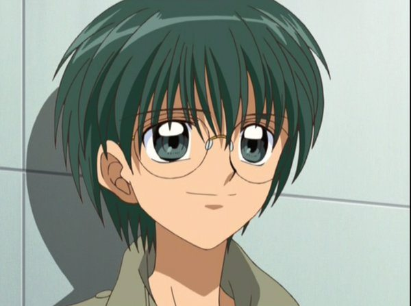
白井渚（白井 渚（しろい なぎさ），Shiroi Nagisa） 配音員：日：日下千尋／台：馬君珮／港：袁淑珍
第二期登場的角色，年齡比波音小，也很頑皮。在機場撿到了海月送給波音的樂譜，波音發現後要求拿回，小渚卻說要波音答應和他交往才肯還給她。
喜歡波音，一開始波音對他極為反感，但後來終於接受他而與他交往。曾以為海斗就是送樂譜給波音的人。
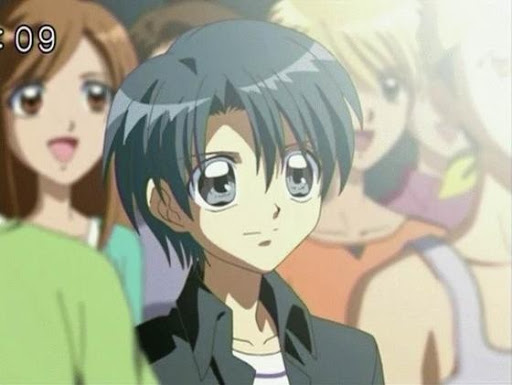
司柏魯（スバル，Subaru，配音員：日：松田佑貴／台：林谷珍／港：黃啟昌）
動畫原創角色，於第二季第15集登場。
本名為司柏魯·卡爾柏特·橋本(Subaru Carbot Hashimoto)。為英國調查團的一員，被派往南極洲找出導致冰層融化的原因，在那時遇見了香蓮。
與香蓮是彼此喜歡的關係，但在南極的異常狀況結束後回到了祖國。
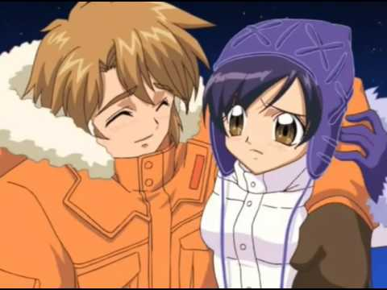
目錄凱特（／ガイト，Gaito，配音員：日：岸尾大輔／台：林谷珍／港：梁偉德）
帕噠拉薩族的王，為堂本海斗的哥哥。
因被長期封印，導致性格孤獨，沙羅解開他的封印後，就不斷遊說他儘快向人類、人魚公主、海洋女神和其胞弟海斗報復，因此想捕捉所有的人魚公主來奪取真珠，得到力量，從而控制
海洋世界及陸地而達到最終目的。後來改變計劃，取得弟弟海斗部分的力量以提升實力。
在沙羅的陪伴下愛上了她。
最終七位人魚公主成功復活阿克安雷之娜女神擊敗凱特，他從此失去法力沉入深海。
在後期，他的靈魂會在露亞和海斗陷入困境時出現在他們夢中。曾附身在理人及海斗的身上來幫助他們得到一些啟示。
深愛的人是沙羅，而因為身為帕噠拉薩族的王，他拒絕與海斗到陸地上的生活，選擇繼續活在海底，堅持自己身為帕噠拉薩族王的驕傲，但因為沙羅回到宮殿的陪伴，從此擺脫終生的孤
獨。
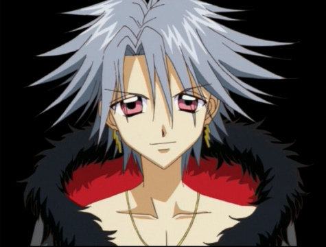
凱特分別用四種不同的深海魚創造的水妖。四人時常搞不清楚狀況，時常表現出滑稽搞笑的一面。她們最後爲了令凱特甦醒，耗盡法力打回原型，更追隨凱特沉入深海
伊姿爾（イズール，Izuru，配音員：日：石塚小夜／台：錢欣郁／港：黃麗芳）
水妖中外貌最成熟的，但比瑪莉亞年輕。
已知有參與滅亡南大西洋王國戰事。絕招是放出水龍及海浪攻擊敵人。原型是鯊魚。
在水中的形態與人魚相似，但尾部是由鱗片覆蓋，沒有魚尾巴。受到美人魚公主的歌聲影響時胸口會劇烈的疼痛。
愛莉爾（エリル，Eriru，配音員：日：松岡由貴／台：李明幸／港：黃玉娟）
原型是電鰩。
形態與人類相似，但有黑色的翅膀和棕色的耳朵，戴黃色頭巾，蓋住耳朵可以抵擋美人魚公主的歌聲，同時這條頭巾亦是她的弱點，被人魚公主拿掉頭巾就會不知所措。
性格可以改變，身體轉過一圈即變換一次。但是經常被成員說她是無腦子的生物，做事完全沒有計劃。 她的絕招是製作器材及龍捲風攻擊敵人。
受到美人魚公主的歌聲影響時身體會不聽使喚的轉圈圈。
悠莉（ユーリ，Yuri，配音員：日：本多知惠子／台：汪世瑋／港：林元春）
黑暗戀人當中年齡最小，歌聲不錯，同時是本作唯一有過勝績的水妖（曾親自擄獲諾葳爾），諸多水妖當中魔力最強者，已知有參與滅亡南大西洋、北大西洋、北極海王國等戰事。
原型是絲背細鱗魨。除了眼睛是類似貓眼，形態與人類一樣。身穿深紅色的歌德蘿莉裝和深灰色的蕾絲髮帶。有時會在攻擊前做準備。絕技是用鋼琴彈奏不協調曲調來操縱心智或使美人
魚陷入痛苦，以及放出高壓水柱，並且會操縱海藻及漩渦。
而一般情況下，她看見美人魚公主便會作出攻擊。有一次因與人魚公主們的作戰失敗，遭到凱特的斥責，便傷心的來到陸地，一不小心踩到了玻璃碎片受了傷。
躲進海邊的小木屋哭泣，被變成人形的小波發現，後來在小波溫柔的幫她包紮後，她就愛上了小波。最後她為了令凱特甦醒，耗盡了法力與其他海妖變回原形。
於漫畫第7卷、動畫第2季第18話，因為小波許願，悠莉能藉機回復水妖形態回到海面上和小波見面（雖然被星羅想早點出世的願望干擾到，但是也因星羅以歌聲停止時間，兩人也得到足
夠的時間來訴說心聲）。
瑪莉亞（マリア，Maria，配音員：日：小林沙苗／台：李明幸／港：鄭麗麗）
原型是帶魚，雖然樣子較年輕，但卻是四人中年紀最大。除了耳朵是由冰晶組成，形態與人類高度相似。到陸地後會變成人類的耳朵。在攻擊前會做足夠的準備。
絕招是使用冰柱及冰雪攻擊敵人，美人魚公主唱歌攻擊她時會受到強烈刺眼的熱光照射。
動畫44集中用魔法書召喚暴風雪凍住整個城市，卻讓露亞和海斗的感情升溫。
凱特用一對鮟鱇魚創造的新水妖，是兩姊妹秀秀和咪咪，在動畫第一季27話首次出現，絕招跟美人魚公主一樣，只要唱歌就可以讓對手陷入痛苦。
麥克風接在臀部。頭上有短的角，耳朵是魚鰭。前期她們為凱特效力，後來知道凱特有沙羅後而反叛之，偷走了諾葳爾和可可的真珠以增加能力，但仍因自身法力不足，無法抵擋美人魚
公主的歌聲，及受到凱特力量的影響，她們法力盡失打回原型，變回鮟鱇魚，但動畫第二季中得到米凱爾法力加持，恢復法力重新成為水妖並為其效力。
法力比黑暗戀人強，人魚公主第一次變身的歌聲無法對她們造成傷害，必須在集齊三位或以上的人魚公主並經過二次變身後所唱的歌才能對她們造成傷害。
當然，她們也要兩人一起唱歌才能發揮效力。最後被米凱爾吸收。米凱爾跟著古代人類離開後亦得以重生。
秀秀（シェシェ，Sheshe，配音員：日：土屋實紀／台：汪世瑋／港：曾秀清）
年紀較大，顔色為紅色，口頭禪是:「唉呀」。
在動畫第一季49話任意使用諾葳爾的真珠力量控制黑暗戀人過，最後真珠被小波撿回歸還給諾葳爾。
咪咪（ミミ，Mimi，配音員：日：下屋則子／台：楊凱凱／港：林雅婷、林元春（代配））
年紀較小，顔色為藍色，口頭禪是「就是說啊」(相反地如果是咪咪先說話，會變成秀秀回答就是說啊)。
但在經過多次的失敗後，再加上某次計劃差點成功，卻因咪咪的失誤再次失敗，秀秀和咪咪因而大吵一架，負氣出走的咪咪陰錯陽差與人類模樣的露亞、波音、莉娜三人結為好友。
動畫第二季咪咪在戰鬥中無意間看見露亞她們因為離水太久，從人魚型態變成人類形態，發現竟是先前結交的朋友，於是她決定不再攻擊美人魚，並改邪歸正。
最後與秀秀一同被饑渴渴求能量的米凱爾吸收。
在第一季49話任意使用可可的真珠力量控制黑暗戀人過，最後真珠被小波撿回歸還給可可。
目錄米凱爾（ミケル，Migeru，配音員：日：皆川純子／台：李明幸／港：李致林）
第二期出場的角色，名稱源自《聖經》大天使長米迦勒。動畫設定是古代人類的後裔，漫畫則是古代人類之王（古代人類與現代人類是不同的物種）。
故事裏人魚和帕噠拉薩族都是古代人類的後裔。
擁有男性的身體外觀，實際上是無性別。[1]
有著淺綠色長髮，淡藍色的眼瞳。時常拿著金色長笛(動畫中只吹奏過一次，而且吹奏的曲子是米兒的主題曲看不到明天，在漫畫中長笛可以變幻成弓箭跟鞭子)。
有著兩對純白羽翼(吸收了黑美人姊妹花後，為三對羽翼。吸收了星羅後，羽翼上有著橘色心之碎片)。
能把自己和星羅部份的力量化為光球，分給手下使用。因此，露亞能透過米凱爾及其手下的羽毛來收集心之碎片。
真身是一塊化石，當年米兒的爸爸為了治療米兒，將米凱爾的化石中的遺傳因子植入米兒的體內，還用了自己身體做實驗，得以製造出米凱爾，但這個米凱爾只是跟化石一模一樣的複製
品，必須寄托在擁有實體的米兒身上。
他不是真正的米凱爾，但也不是米兒。這使他覺得自己是不完全的存在，沒有人會認同。他憎恨著愛、友情以及人類。
為了吸收美人魚公主的力量來讓自己更強大，所以到處捕捉美人魚公主。在星羅誕生時成功吸收了她。但因為多次受到了海斗、星羅力量的影響，以及宿主米兒身體不好的原因，始終無
法吸收露亞她們。為成為完全體將米兒吸收，讓她的靈魂寄托在自己身上。後來更因為渴求能量把部下們全部吸收。
古代的米凱爾化石粉碎之後決定放下一切，最後跟著古代人類回歸天堂。
小布（フクちゃん，Fukuchan，港譯為小呼咕） 配音員：日：小林沙苗／台：錢欣郁
米兒飼養的白文鳥，因對體弱多病的米兒來說這隻鳥是她的第一個朋友，於是將自己能得到幸福的願望寄託在為牠取的名字中(日文的｢幸福｣後兩個音同其名字)。
白文鳥是偽裝的樣貌，實際上他是古代人類的使者，奉命守護米凱爾的身體並企圖復興古代人類。在米凱爾決定收手後，附到米凱爾身上操控他繼續對美人魚公主們做出攻擊。最後跟著
古代人類回歸天堂。
原型為人頭鳥身，有著粉紅色的短髮，頭頂懸著天使光環。
蝙蝠小姐（レディ・バット，Redei Batto ，配音員：日：小林沙苗／台：馬君珮／港：黃玉娟）
漫畫中自稱為支配愛與快樂的羽翼。
有一對蝙蝠的翅膀，穿著開胸襯衫與緊身裙。動畫中偽裝成人類時會穿著中性服裝。
唱歌時會戴上耳麥。她的歌能使美人魚公主意識恍惚，從而她就可以用尖牙咬美人魚公主吸血，使美人魚公主順從她。失敗後會化為蝙蝠群消失。
最終被米凱爾吸收，但在漫畫尾聲以靈體重現，向米凱爾表達真心後一同回歸天堂。
蘭花（ランファ，Ranhua，配音員：日：小島恩惠／台：汪世瑋／港：黃麗芳）
漫畫中自稱為支配慾望與享樂的羽翼。
有一對藍紫色蝴蝶翅膀，身穿旗袍、手執摺扇。歌曲也是中式古典風格。唱歌時身體會分成12個小蘭花，像女子十二樂坊一樣彈奏中式樂器伴奏。
唱的歌能使美人魚公主的身體失控，不斷跳舞至全身無力。失敗後會化為蝴蝶群消失。
最終被米凱爾吸收，但在漫畫尾聲以靈體重現，向米凱爾表達真心後一同回歸天堂。
阿拉拉（あらら，Arara，配音員：日：倉田雅世／台：錢欣郁／港：程文意）
漫畫中自稱為支配夢與墮落的羽翼。
有一對妖精的翅膀，唱歌時會用魔法棒發出星星，使美人魚公主感到頭痛，若被星星撞上會陷入美夢。漫畫中失敗後變回裸身消失，動畫則是變小並抱著葉子飛走。
動畫中在人間界參加偶像選拔，並成為偶像明星，使人類男子在聽見她的歌後強烈的為她著迷，藉此引來美人魚公主的注目。在此狀態下隱藏翅膀，同時眼睛由粉色轉變為棕色。
最終被米凱爾吸收，但在漫畫尾聲以靈體重現，向米凱爾表達真心後一同回歸天堂。
名字是受松浦亞彌的暱稱「Ayaya」的啟發而產生的。其口頭禪為「唉呀呀」。
目錄阿克安·雷芝娜（アクア・レジーナ，Akua Rejina，配音員：日：山門久美／台：李明幸／港：陸惠玲）
海洋女神，常常在露亞她們有難時出現，並給予新的歌曲。
曾將帕噠拉薩族封印，並把海斗兄弟分隔於海洋和陸地，防止他們的力量過大而威脅世界的安危，但耗盡了自己的力量使真身沉睡，需要7位美人魚公主一同唱歌喚醒她，才得以甦醒。
在漫畫結局中，把守護海洋的重任交給露亞，讓她成為新的女神。
名稱拉丁語原意為「水之女王」。
天城米兒（あまぎ みかる，Amagi Migaru，配音員：日：新谷良子／台：李明幸;楊凱凱(幼年)／港：陳凱婷）
第二期出場的角色，天城理人的妹妹，同時也是帕噠拉薩族的後裔(父親為人類，而母親則是帕噠拉薩族)。
因為無法負荷帕噠拉薩族的力量，身體特別虛弱，而米兒的爸爸為了讓她康復，讓米凱爾的靈魂寄托在米兒的身體裡，但米兒的身體並沒有得到好轉。
由於從小只能待在家中休養，非常渴望擁有朋友。
在夏威夷的海灘上救起了失去記憶的海斗，自此把海斗帶回家一起生活，並且愛上了他。後來轉學到露亞等人所在的學校。
確信自己對海斗的感情得不到回應後陷入絕望，因此自願將身體交給米凱爾。最後米兒在阿克安·雷芝娜女神的力量扶持下得以重生，僅三個月(動畫為一個月)就長成能說能跑的孩子。
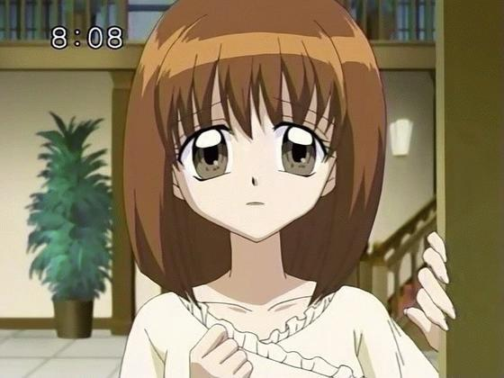
天城理人（あまぎ リヒト，Amagi Rihito，配音員：日：水島大宙／台：林谷珍／港：陳廷軒）
第二期出場的角色，是著名的音樂指揮家，米兒的哥哥，亦是帕噠拉薩族的後裔。
露亞在機場送海斗時與他初次相遇。
灰髮灰眼，為人沉穩，外貌很像年長後的海斗。
為了體弱多病的米兒而費盡苦心，自小和父親的感情不太好，尤其在得知父親聽信古代人類使者的話後對米兒所做的事感到非常憤怒。
最終在得知父親為救米兒而犧牲性命後，選擇原諒他。
最後和重生的米兒一起開始新生活。
小誠（マコト，Makoto，配音員：日：日下千尋／台：錢欣郁／港：陸惠玲）
動畫原創角色，於第一季第21集登場。
為海斗的表弟，放暑假時在海斗家借住。
擅長繪畫，聽海斗說他小時候的經驗而對美人魚感興趣，後來意外發現了露亞的真實身份，並對她一見鍾情。
最後親自向露亞確認她對海斗的感情後，將第一次看見美人魚露亞時所畫的圖送給她，作為兩人之間的祕密。
崎谷浩介（さきや こうすけ，Sakiya Kousuke，配音員：日：福山潤／台：賀宇傑／港：蘇強文）
動畫原創角色，於第一季第8和第26集登場。
西日本衝浪大會的冠軍選手，在東日本大會以及全國大會兩度與海斗競爭。
在旁人眼中看起來很輕浮，擁有許多女性仰慕者。曾因喜歡露亞而向她告白。
曾拿露亞的吻為賭注向海斗挑戰，最後輸給海斗。
代替了漫畫角色——去年全國大賽冠軍「強尼河本」的出場。
目錄太陽の楽園〜Promised Land〜(太陽的樂園/相信自己)（第1話 - 第28話）
作詞 - 三井ゆきこ／作曲・編曲 - 大內哲也／歌 - 神戶美有紀
Rainbow Notes♪（第29話 - 第52話）
作詞 - 三井ゆきこ／作曲 - 勝誠二／編曲 - 蓮沼健介／歌 - 神戶美有紀
Before the Moment（第1話 - 第39話）
作詞 - 三井ゆきこ、ポリン／作曲・編曲 - 岩見直明／歌 - 喜多村英梨
大事な寶箱(愛的百寶箱)（第1話 - 第28話）
作詞 - ポリン／作曲・編曲 - 小林信吾／歌 - 中田明日見
世界で一番早く朝が來る場所(全世界最早的早晨出現的地方)（第29話 - 第52話）
作詞 - 三井ゆきこ／作曲 - 佐藤直紀／編曲 - 吉川慶／歌 - 七海露亞（CV：中田明日見）、寶生波音（CV：寺門仁美）、洞院莉娜（CV：淺野麻由美）
愛の溫度℃（第1話 - 第39話）
作詞 - 三井ゆきこ／作曲・編曲 - 小林信吾／歌 - 七海露亞（CV：中田明日見）、寶生波音（CV：寺門仁美）、洞院莉娜（CV：淺野麻由美）
戀はなんだろう(戀愛是什麼)
作詞：ゆうきかな／作曲・編曲：永井ルイ／歌：七海露亞（CV：中田明日見）
Splash Dream
作詞：福田哲也／作曲：勝誠二／編曲：西嶋正己／歌：七海露亞（CV：中田明日見）
Ever Blue
作詞：三井ゆきこ／作曲：堀田健志／編曲：佐藤和朗／歌：寶生波音（CV：寺門仁美）
Star Jewel
作詞：三井ゆきこ／作曲：大內哲也／編曲：大內哲也／歌：洞院莉娜（CV：淺野麻由美）
オーロラの風に乗って(極光的風)
作詞：三井ゆきこ／作曲・編曲：大內哲也／歌：香蓮（CV：小暮英麻）
Return to the Sea
作詞：福田哲也／作曲：勝誠二、森田俊輔／編曲：竹田元／歌：沙羅（CV：植田佳奈）
MOTHER SYMPHONY
作詞：三井ゆきこ／作曲：松田彬人／編曲：竹田元／歌：七海露亞（CV：中田明日見）
水色の旋律(水色的旋律)
作詞：三井ゆきこ／作曲：堀田健志／編曲：堀田健志／歌：寶生波音（CV：寺門仁美）
Piece of Love
作詞：三井ゆきこ／作曲：林浩司／編曲：竹田元／歌：洞院莉娜（CV：淺野麻由美）
Birth of Love
作詞：三井ゆきこ／作曲：鶴來正基／編曲：武藤星見／歌：星羅（CV：喜多村英梨）
Beautiful Wish
作詞：三井ゆきこ／作曲・編曲：延近輝之／歌：星羅（CV：喜多村英梨）
Legend of Mermaid(七彩的微風)
作詞：三井ゆきこ／作曲・編曲：林浩司
Super Love Songs!
作詞：三井ゆきこ／作曲：勝誠二／編曲：神津裕之
KODOU～パーフェクト‧ハーモニー～(鼓動）
作詞：福田哲也／作曲・編曲：勝誠二
KIZUNA（愛的默契）
作詞：福田哲也／作曲・編曲：勝誠二
夢のその先へ（幸福的女孩）
作詞：三井ゆきこ／作曲：石田裕之／編曲：H2
七つの海の物語～Pearls of Mermaid～(七大海洋的傳說～ Pearls of Mermaid ～)
作詞：三井ゆきこ／作曲：林浩司／編曲：三輪悟
希望の鐘音～Love goes on～(希望的鐘聲～Love goes on～)
作詞：三井ゆきこ／作曲：勝誠二／編曲：榎本英彥
黑の協奏曲（コンチェルト）～concerto～
作詞 - 三井ゆきこ／作曲・編曲：延近輝之／歌：黑美人姐妹花（CV：土屋實紀、下屋則子）
闇のBAROQUEバロック(黑暗的巴洛克)
作詞：三井ゆきこ／作曲・編曲：延近輝之／歌：黑美人姐妹花（CV：土屋實紀、下屋則子）
暗黑の翼
作詞：MARIA／作曲／編曲：大內哲也／歌：蝙蝠小姐（CV：小林沙苗）
花と蝶のセレナーデ(花與蝴蝶之小夜曲)
作詞：三井ゆきこ／作曲・編曲：土谷知幸／歌：蘭花（CV：小島恩惠）
Star☆メロメロ Heart(Star☆為我神魂顛倒的心)
作詞：卑彌乎／作曲・編曲：延近輝之／歌：阿拉拉（CV：倉田雅世）
翼を抱いて(懷抱著羽翼)
作詞：MARIA／作曲：鶴來正基／編曲：延近輝之／歌：米凱爾（CV：皆川純子）
明日が見えなくて(看不到明天)
作詞：MARIA／作曲：鶴來正基、延近輝之／編曲：延近輝之／歌：天城米兒（CV：新谷良子）
目錄